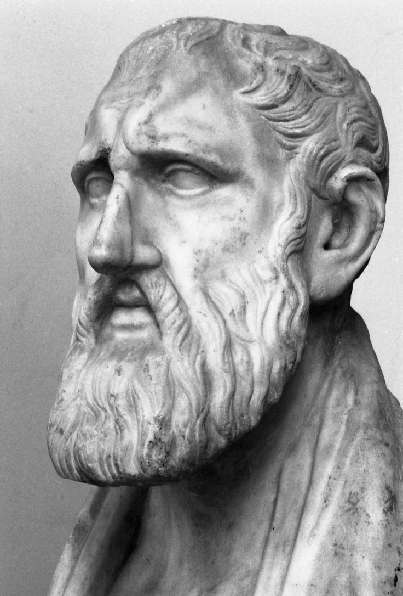

Who Was Zeno of Citium?
Zeno of Citium was an ancient Greek philosopher of the Hellenistic period and the founder of Stoicism, one of the most influential philosophical schools of antiquity. Born in Citium on Cyprus around the fourth century BCE, he later travelled to Athens, the major intellectual centre of the Greek world, where he devoted himself to the study of philosophy and eventually established his own distinctive school.
Before founding Stoicism, Zeno encountered several important philosophical traditions. Ancient sources associate him particularly with the influence of the Cynic philosopher Crates, while he also studied or was influenced by thinkers connected with Plato's Academy and the Megarian tradition. These encounters helped shape a philosophy that combined practical concern for the good life with systematic questions about reason, knowledge, nature, and the structure of the universe.
Zeno taught in Athens at the Stoa Poikilē, or Painted Porch, a public colonnade in the Athenian Agora. It was from this place of teaching that his philosophical movement acquired the name Stoicism. The choice of a public setting also reflected the practical character of Hellenistic philosophy, which sought not merely to construct abstract theories but to provide guidance about how human beings should live amid uncertainty, suffering, success, and changing circumstances.
Zeno's philosophy focused particularly on the question of how human beings should live. He taught that the good life depends fundamentally on virtue, rational judgment, and living in agreement with nature. Wealth, pleasure, reputation, health, and other external circumstances could be desirable or undesirable in ordinary life, but they were not, in themselves, the ultimate basis of happiness or moral worth. For Zeno and the Stoics, a person's character and use of reason were therefore more important than the accidents of fortune.
Zeno's importance extended beyond ethics. Early Stoicism developed a systematic philosophical framework involving logic, physics, and ethics, which the Stoics regarded as interconnected rather than completely separate disciplines. Logic concerned reasoning and knowledge, physics investigated nature and the rational order of the universe, and ethics examined how human beings should live within that order. Although none of Zeno's writings has survived intact, later ancient authors and the subsequent Stoic tradition preserve important evidence about the philosophy he began.
Zeno of Citium: Quick Facts
- Name — Zeno of Citium
- Born — Traditionally dated to around 334/333 BCE
- Died — Traditionally dated to around 262 BCE
- From — Citium, Cyprus
- Period — Hellenistic philosophy
- Known for — Founding Stoicism
- Philosophical tradition — Early Stoicism
- Major interests — Ethics, logic, physics, virtue, reason, and nature
- Teacher associated with his early education — Crates of Thebes and other philosophers
- Place of teaching — Athens
- Philosophical school — The Stoa
- Surviving writings — No complete work by Zeno survives
Zeno of Citium and Hellenistic Philosophy

Zeno lived during the Hellenistic period, an era that followed the conquests of Alexander the Great and transformed the political and intellectual world of the eastern Mediterranean. Greek philosophy increasingly addressed practical questions about happiness, virtue, knowledge, nature, and the best way to live in a world marked by political change and the expansion of Greek culture across many regions.
Athens remained one of the most important philosophical centers of the Greek world, even though its political power had declined. The city continued to attract teachers and students from across the eastern Mediterranean, and philosophical schools provided competing accounts of how human beings should understand reality and achieve a good life. Zeno himself came to Athens from Citium on Cyprus and developed his philosophy within this exceptionally active intellectual environment.
Several major schools were active during this period. Epicureans, Skeptics, Academics, Peripatetics, Cynics, and Stoics offered different answers to questions about knowledge, ethics, happiness, and the nature of reality. Hellenistic philosophy was therefore not a single unified tradition but a field of vigorous disagreement in which philosophers defended rival conceptions of human flourishing and rational inquiry.
Stoicism emerged directly from this intellectual environment. Zeno's philosophy drew strongly on the Socratic tradition and especially on Cynicism, while his education also brought him into contact with the Platonic Academy and the Megarian school. Rather than simply repeating the doctrines of one earlier movement, Zeno developed a distinctive philosophical synthesis that eventually became one of the major schools of the ancient world.
A central feature of Hellenistic philosophy was its concern with how philosophy should shape an entire life. Stoicism therefore combined theoretical investigation with practical ethical questions about fear, desire, suffering, success, responsibility, and happiness. Zeno's lasting importance lies partly in the way his school connected these questions with broader theories of logic, knowledge, nature, causation, and the structure of the cosmos.
Did Zeno of Citium Found Stoicism?
Yes. Zeno of Citium is traditionally and historically regarded as the founder of Stoicism. He established his philosophical school in Athens around 300 BCE after spending years studying with and learning from several existing philosophical traditions. The movement that developed around his teaching eventually became known as Stoicism and continued as a major philosophical tradition for centuries.
The name "Stoic" comes from the Stoa Poikilē, or Painted Porch, a famous public colonnade in the Athenian Agora. Zeno and his followers became associated with teaching and discussing philosophy in this location, giving the school the name by which it became known. Unlike a private household or an isolated retreat, the Stoa was part of the public life of Athens and provided a visible setting for philosophical discussion.
Zeno's achievement was not simply the creation of another ethical movement. Early Stoicism developed into a broad philosophical system concerned with logic, physics, and ethics. These fields were understood as connected parts of a larger attempt to explain how human beings can acquire knowledge, understand the natural world, and live rationally within it.
Zeno was the first head of the Stoic school and was succeeded by Cleanthes of Assos. Cleanthes was later succeeded by Chrysippus of Soli, who played an especially important role in developing and systematizing Stoic philosophy. For this reason, modern readers should distinguish between the founding ideas associated with Zeno and the more elaborate doctrines that emerged through the work of later Stoic philosophers.
Zeno of Citium: Early Life and Education
Zeno was from Citium, an important city on Cyprus, and he was probably born during the fourth century BCE. Ancient traditions associate his family and early life with commerce, and later biographical accounts often describe him as having been involved in trade before turning seriously toward philosophy. However, the surviving evidence for many details of his early life is limited and does not allow every traditional story to be accepted with certainty.
According to ancient biographical traditions, an important turning point in Zeno's life brought him to Athens, where he encountered philosophical writings and teachers. One famous story connects his arrival with a shipwreck and describes him reading works about Socrates before being directed toward the Cynic philosopher Crates. The story is valuable for understanding how later antiquity imagined Zeno's intellectual development, but its dramatic details should be treated with appropriate historical caution.
Zeno studied with the Cynic philosopher Crates of Thebes, whose emphasis on virtue, independence, and freedom from conventional standards strongly influenced early Stoicism. Ancient sources also connect Zeno with Stilpo of the Megarian tradition and with teachers associated with Plato's Academy, including Polemo. His philosophical education was therefore broader than the influence of any single teacher or school.
These different influences help explain why early Stoicism was not simply a continuation of Cynicism or another Socratic school. Zeno retained the strong Socratic concern with virtue while developing a systematic account of reasoning, knowledge, nature, and the cosmos. The result was a philosophy that attempted to connect practical moral life with a comprehensive understanding of reality.
Zeno's movement from Cyprus to Athens also reflects the wider cosmopolitan character of the Hellenistic world. Major intellectual centers attracted thinkers from different regions, and the founders of several philosophical schools active in Athens came from outside the city itself. Stoicism was therefore created within Greek philosophical culture while drawing its founder and many of its early representatives from the wider eastern Mediterranean world.
What Did Zeno of Citium Believe?
Zeno's philosophy placed virtue at the center of human life. The Stoic view was that genuine flourishing cannot depend fundamentally on possessions, social status, bodily pleasure, or other circumstances that may be gained or lost through fortune. Instead, the good life depends above all on the quality of a person's rational judgment and moral character.
Zeno and the early Stoics also argued that human beings should live in accordance with nature. This did not simply mean spending time outdoors or following every immediate biological impulse. It referred to living in a manner appropriate to rational beings and to understanding human life as part of a larger natural order governed by causal and rational principles.
Stoic philosophy distinguished between what is genuinely good, what is genuinely bad, and things that are neither good nor bad in the strict moral sense. Virtue was treated as genuinely good, while moral vice was genuinely bad. Wealth, health, reputation, pleasure, and many other external circumstances did not determine whether a person was morally good, even though they could still matter in practical life.
Zeno's philosophy was also systematic. Early Stoicism organized philosophical inquiry around logic, physics, and ethics. Logic concerned reasoning and knowledge, physics concerned nature and the structure of reality, and ethics concerned how human beings should live. The Stoics believed these areas supported one another rather than existing as completely independent subjects.
Because Zeno's writings have not survived in complete form, it is important to distinguish between doctrines directly associated with him and theories developed more fully by later Stoics. Nevertheless, the surviving evidence clearly presents Zeno as the thinker who established the fundamental direction of Stoicism: a philosophy centered on virtue, reason, nature, and the possibility of living well despite changing external circumstances.
Zeno of Citium on Virtue and the Good Life
Virtue was central to Zeno's ethical philosophy. Stoicism developed the Socratic conviction that living well requires rational understanding of what is genuinely good and bad. A person's moral condition therefore depends primarily on the state of their character and judgment rather than on the amount of wealth, power, or pleasure they happen to possess.
The Stoic ethical ideal is not simply emotional toughness or the ability to endure hardship without complaint. It involves developing the rational capacity to understand situations correctly, distinguish moral value from external circumstance, and act appropriately. Stoic strength is therefore fundamentally connected with wisdom and sound judgment rather than with mere stubbornness or suppression of feeling.
Later Stoic discussions describe wisdom, courage, justice, and moderation as connected expressions of rational excellence. These formulations were developed within the broader Stoic tradition, and the evidence for Zeno's exact terminology must be treated carefully. Yet the fundamental Stoic commitment to virtue as the central condition of a good human life is firmly associated with the philosophy he founded.
Zeno is traditionally associated with the Stoic claim that virtue is sufficient for happiness in the ethical sense of eudaimonia, or human flourishing. This does not mean that a virtuous person experiences every circumstance as pleasant. Rather, it means that suffering, poverty, illness, and other misfortunes do not automatically destroy the possibility of living a morally good and genuinely flourishing life.
This position was one of Stoicism's most radical challenges to common assumptions about happiness. Many people naturally believe that a good life depends on favorable fortune, security, success, or pleasure. Zeno's philosophical tradition argued instead that the most important good lies within the development of rational and virtuous character, making moral excellence less vulnerable to the unpredictable changes of external circumstances.
What Did Zeno Mean by Living According to Nature?
One of the best-known Stoic principles is the idea of living according to nature. For Zeno and the early Stoics, this principle involved bringing human reason and conduct into agreement with the nature of human beings and with the larger order of the cosmos. It was therefore a philosophical principle about rational life rather than a simple instruction to follow every spontaneous desire or natural impulse.
Human beings were understood as creatures capable of reason and reflection. Because rationality is a defining human capacity, living well requires developing and using that capacity correctly. The Stoic life therefore demands examination of one's judgments, desires, and decisions rather than passive obedience to emotion, social fashion, or whatever happens to bring immediate pleasure.
The Stoic conception of nature also extended beyond individual human psychology. Early Stoicism understood the universe as an ordered whole governed by causal principles and rational structure. Human beings were therefore not viewed as isolated individuals existing outside nature but as parts of a larger cosmos whose order philosophy attempts to understand.
Living according to nature therefore means more than accepting whatever happens passively. A Stoic is expected to make rational judgments, perform appropriate responsibilities, and actively pursue virtue. Acceptance concerns the recognition that many external events are not determined by personal desire, whereas moral responsibility concerns the way a rational person understands and responds to those events.
The formula became central to Stoicism and was interpreted and developed by later members of the school. When discussing Zeno specifically, it is therefore useful to recognize both the early importance of the principle and the fact that later Stoics provided increasingly detailed explanations of what it means to live in harmony with human nature, rationality, society, and the wider cosmos.
Zeno of Citium and Stoic Ethics
Zeno's ethical philosophy developed around the fundamental question of what makes a human life genuinely good. His answer placed virtue above external advantages such as wealth, reputation, pleasure, political power, or social status. These things may affect the circumstances in which a person lives, but they do not by themselves determine whether that person possesses moral excellence.
This position does not mean that Stoics believed every external circumstance was equally desirable. Health may naturally be preferable to illness, and security may naturally be preferable to danger. However, external conditions were not considered the ultimate basis of moral goodness. The central ethical question was how a rational person judges circumstances and chooses to act within them.
Stoic ethics therefore emphasizes judgment, character, rational choice, and virtue. Human beings cannot control every event that occurs around them, but they remain responsible for many aspects of their reasoning and moral response. This emphasis gave Stoicism a distinctive approach to questions about misfortune, success, fear, desire, and personal responsibility.
The Stoic tradition also developed the distinction between things that are morally good or bad and things that are indifferent in relation to virtue. The term "indifferent" can be misleading if it suggests that Stoics were expected to care about nothing. It means instead that external things do not possess the same moral status as virtue and vice and cannot, by themselves, make a person morally good or corrupt.
Zeno's ethical project was ultimately concerned with the formation of a stable and rational character. A person who develops virtue can retain moral integrity even under difficult circumstances, while a person who possesses wealth or power without wisdom remains vulnerable to poor judgment and moral failure. This conviction became one of the defining principles of the Stoic conception of human flourishing.
What Did Zeno of Citium Teach About Emotions?
Stoic philosophy developed a detailed account of emotions, treating many destructive passions as closely connected with mistaken judgments about what is genuinely good or bad. Excessive fear, grief, desire, and other passions could arise when people incorrectly believed that external events or possessions determine their ultimate happiness and moral condition.
The Stoic goal was not simply to become incapable of feeling anything. Stoicism did not present the ideal person as an emotionless object without concern for other human beings. Instead, the philosophical project involved freedom from irrational and destructive passions through the correction of false judgments and the development of wisdom.
This approach gave Stoic ethics an important cognitive dimension. Emotions were not treated merely as physical forces that overpower a passive mind; they were connected, in important ways, with the way a person interprets and evaluates events. Changing one's understanding of what is truly valuable could therefore change one's emotional response to success, loss, danger, and disappointment.
Later Stoic philosophers developed these theories in considerable detail and introduced increasingly sophisticated terminology for the analysis of passions and rational emotional states. Because the surviving evidence for Zeno's own writings is fragmentary, it is important not to attribute every later Stoic psychological theory directly to him without qualification.
Nevertheless, the connection between ethical error and mistaken judgment belongs to the fundamental direction of Stoic philosophy. Zeno's school encouraged individuals to examine the beliefs underlying fear and desire rather than assuming that every powerful feeling must be accepted as an accurate guide to reality. In this respect, Stoicism made rational self-examination central to the philosophical care of the human character.
Zeno of Citium and the Stoic Theory of Knowledge
Zeno's philosophy was concerned not only with how human beings should live but also with how they can know what is true. Early Stoic logic included questions that would now be associated with epistemology, philosophy of language, and theories of reasoning. Ethical wisdom required correct judgment, so the problem of knowledge was closely connected with the Stoic attempt to explain virtuous life.
Stoic philosophers developed the idea that human beings receive impressions from the world and must decide whether to accept or reject them. Not every appearance should automatically be treated as true. Rational judgment requires examining impressions and avoiding careless assent to beliefs that have not been adequately understood.
Zeno is associated with the early Stoic concept of katalepsis, often translated as "grasping" or "cognitive apprehension." The concept became central to Stoic debates with skeptical philosophers about whether human beings can possess reliable knowledge. The Stoics argued that some impressions provide a sufficiently secure basis for rational assent and knowledge.
Later Stoics developed these epistemological theories in greater detail, and ancient debates about their exact interpretation remain philosophically complex. What is clear, however, is that Stoicism did not treat moral wisdom as something produced by good intentions alone. The virtuous person must also learn how to reason correctly and how to distinguish reliable understanding from error and confusion.
Zeno of Citium and Stoic Logic
Zeno's philosophy was not limited to ethics. Early Stoicism treated logic as one of the three major parts of philosophy, alongside physics and ethics. The Stoic understanding of logic was broader than what is now usually meant by formal logic alone and included questions concerning reasoning, argument, language, knowledge, and the correct use of rational judgment.
Logic was important because Stoic ethics depends on the ability to distinguish truth from error. A person cannot consistently live rationally while accepting every impression or belief without examination. Stoic logical inquiry therefore investigated the conditions under which judgments can be accepted, the structure of arguments, and the ways in which mistaken reasoning can lead to false beliefs and poor decisions.
Early Stoicism developed a distinctive approach to argument that later became highly influential in the history of logic. Stoic philosophers paid particular attention to complete propositions and the relations between them, helping establish a tradition of logical analysis that differed in important ways from the syllogistic approach associated with Aristotle.
Zeno's contribution belongs to the beginning of this Stoic logical tradition. Much of its most elaborate technical development occurred under later philosophers, especially Chrysippus, who became one of the school's greatest systematizers. For this reason, the history of Stoic logic should be understood as a continuing intellectual development rather than as a finished system created entirely by Zeno alone.
Zeno of Citium and Stoic Physics
Stoic physics investigated the structure and operation of the natural world. Early Stoicism conceived nature as an ordered and interconnected system governed by causal principles rather than as a collection of unrelated events. Understanding nature was important not only as a theoretical pursuit but also because Stoic ethics asked human beings to understand their own place within the wider order of the cosmos.
Stoic physical theory distinguished between active and passive principles and described the cosmos as an interconnected whole. The active principle was associated with rational organization, while the passive principle was associated with matter. These ideas formed part of a broader Stoic attempt to explain how an ordered and dynamic universe could arise through the interaction of fundamental principles.
Concepts such as logos, divine reason, and pneuma became important in Stoic accounts of the organization of nature. Early Stoics generally understood reality in strongly physical terms, and their philosophy attempted to explain living beings, the human soul, and the cosmos as parts of a causally connected natural system rather than as completely separate realms.
These doctrines were developed across generations of Stoic thinkers. Some important formulations associated with Stoic physics became more precise under Cleanthes, Chrysippus, and later philosophers. They should therefore be understood as part of the developing Stoic system rather than assuming that every later formulation was stated by Zeno in exactly the same form.
The importance of Stoic physics for Zeno's philosophy lies in its connection with ethics. If human beings are parts of a rationally structured natural world, then philosophical understanding of nature can help clarify what it means to live rationally. Stoicism therefore attempted to connect knowledge of the cosmos with the practical task of developing a virtuous human life.
Zeno of Citium and the Stoic Idea of Logos
The Greek concept of logos became important in Stoic philosophy as a way of describing rational order and intelligibility within the cosmos. The term had a long history in Greek thought and could refer to reason, explanation, principle, or rational account. Stoicism gave it an important role in explaining why nature could be understood as an ordered system rather than as a completely random collection of events.
Stoic philosophy understood human reason as connected with this wider rational order. Human beings possess the capacity to reflect, judge, deliberate, and understand relationships within the natural world. This connection between individual reason and cosmic order helped support the Stoic ethical demand that human beings should seek to live according to nature rather than according to irrational impulse alone.
The Stoic idea of logos also contributed to the school's understanding of causation and divine nature. The universe was not conceived as fundamentally meaningless or without structure but as a coherent whole governed by principles that philosophical investigation could attempt to understand. This made the study of nature relevant to the Stoic conception of rational human conduct.
The Stoic concept of logos was developed throughout the history of the school, and its relationship to other concepts such as God, nature, fire, and pneuma received different formulations. It is therefore historically important not to project every later Stoic interpretation backward onto Zeno. The basic connection between reason, nature, and cosmic order, however, belongs to the central philosophical framework established by early Stoicism.
Zeno of Citium on God, Nature, and the Cosmos
Early Stoicism presented the cosmos as an ordered and living whole governed by rational nature. Stoic theology identified the divine with the rational and active principle operating throughout the universe in ways that differ substantially from later conceptions of a God existing entirely outside or independently of the natural world.
Stoic thought therefore connected God and nature rather than treating them as completely separate realities. Ancient Stoics could use traditional names such as Zeus while interpreting divinity philosophically as the rational and organizing power of the cosmos. This approach allowed Stoicism to engage with Greek religious language while developing a distinctive philosophical account of the natural world.
Stoic physics connected divine reason with the causal structure of nature. Events occur within an interconnected universe, and the cosmos was understood as possessing order rather than being fundamentally chaotic or meaningless. The natural world was therefore a subject for rational investigation and an essential part of the philosophical framework within which Stoic ethics was developed.
These ideas formed part of the broader Stoic attempt to connect physics and ethics. If nature is rationally ordered and human beings possess reason, then a rational life should seek harmony with nature. Understanding one's place within the whole could therefore contribute to freedom from false beliefs about personal importance, fortune, and the apparent disorder of individual events.
The precise theological doctrines of Stoicism developed over several generations, and later sources sometimes preserve them without making it easy to identify Zeno's exact formulation. Nevertheless, the close relationship between rationality, nature, causation, and divinity was a defining feature of the early Stoic worldview and an important background to Zeno's ethical ideal of living according to nature.
Zeno of Citium and Stoic Fate
Stoic philosophy developed a strong doctrine of causal order and fate. The cosmos was understood as an interconnected network of causes rather than a collection of events occurring without relation to one another. Every event takes place within the larger natural order, and understanding this causal structure became an important part of the Stoic view of reality.
This created an important philosophical question: if events occur within a universal chain of causes, what room remains for human agency and moral responsibility? The Stoics did not simply ignore this problem. Instead, they attempted to explain how human actions and judgments themselves can be parts of the causal order while remaining meaningfully connected with a person's character and rational activity.
Early and later Stoics developed sophisticated responses to this problem, although some of the most detailed surviving arguments belong to later representatives of the school. Stoic freedom was closely connected with the quality of one's rational judgment and response rather than with the ability to make events occur independently of all causes or to control every circumstance in the external world.
This distinction helps explain a central Stoic attitude toward misfortune. A person may not choose whether illness, political change, loss, or other external events occur, but philosophy can examine how that person understands and responds to such circumstances. Fate does not therefore eliminate the ethical importance of character; rather, Stoicism asks how rational agency operates within a world governed by causal relationships.
The full Stoic theory of fate and responsibility was developed over generations and should not be attributed in every detail to Zeno alone. Yet the early Stoic commitment to a rationally ordered and causally connected cosmos provides the essential foundation for later Stoic discussions of determinism, freedom, responsibility, and the proper acceptance of events beyond individual control.
What Did Zeno Think About Wealth, Pleasure, and Success?
Stoic ethics does not treat wealth, pleasure, health, reputation, or social status as the ultimate sources of happiness. These things can change rapidly and may depend partly on circumstances outside an individual's control. Zeno's philosophical tradition therefore argued that a life built entirely upon external success remains vulnerable to fortune and cannot provide a secure foundation for moral flourishing.
Instead, the Stoics regarded virtue as the genuine good and moral vice as the genuine evil. Many external things were classified as indifferent in the strict moral sense because possessing them does not by itself make a person virtuous. Wealth may be used wisely or badly, and a poor person may possess excellent character despite lacking material advantages.
This does not mean that all external things should be treated as practically identical. Stoic ethics developed distinctions between things that are naturally preferred and things that are naturally dispreferred. Health, for example, may normally be preferred to illness, while neither condition determines a person's fundamental moral worth.
This distinction allowed Stoicism to avoid the claim that human beings should deliberately seek suffering or reject every ordinary advantage. A Stoic can reasonably prefer health, friendship, education, or material security while recognizing that these are not the ultimate standards by which a life should be judged. The highest ethical value remains the rational and virtuous use of whatever circumstances arise.
Zeno's treatment of external things became one of the defining differences between Stoicism and many ordinary conceptions of success. The question is not simply whether a person possesses desirable things but whether they understand their proper value and use them without becoming morally dependent upon them. Later Stoics developed this distinction in greater technical detail, but its basic direction is rooted in the ethical framework of the early Stoa.
The Stoic Sage in Zeno's Philosophy
An important ideal within early Stoicism was the figure of the sage, the person who possesses complete wisdom and consistently understands what is genuinely good, bad, and indifferent. The sage represented the highest expression of rational and virtuous human life and provided Stoic philosophy with an ethical standard against which ordinary patterns of judgment and behavior could be examined.
The Stoic sage was not simply someone who had accumulated a large amount of information. Wisdom involved the correct use of reason in practical life: judging circumstances properly, acting justly, and refusing to confuse external success with genuine moral goodness. The ideal therefore connected knowledge and character rather than treating intellectual understanding as separate from ethical conduct.
Stoicism recognized that ordinary human beings rarely, if ever, achieve perfect wisdom. The sage nevertheless served as a philosophical ideal that showed what complete rational consistency would involve. The distance between ordinary life and this ideal also emphasized the importance of philosophical education, self-examination, and the gradual correction of mistaken judgments.
The concept was developed by the Stoic tradition beyond Zeno, and ancient Stoics debated various features of the wise person's character. Even so, the ideal reflects a fundamental Socratic inheritance within Stoicism: virtue depends upon genuine wisdom, and the philosophical task is not merely to know theories but to transform the way one understands and lives.
Zeno of Citium and Stoic Cosmopolitanism
Zeno is associated with an influential Stoic vision of human beings as belonging to a wider moral community rather than being defined only by membership in a particular city, ethnic group, or political community. This broader perspective became one of the most important features of Stoic political and ethical thought and reflected the increasingly interconnected world of the Hellenistic period.
His work Republic, which survives only through fragments and reports, has been associated with a radical vision of political and social organization based more fundamentally on nature and reason than on inherited convention. The work appears to have challenged many assumptions about ordinary civic institutions and explored what a community organized around philosophical principles might require.
Stoic cosmopolitanism did not necessarily mean the creation of a single political state governing the entire world. Its deeper philosophical significance was the claim that rational human beings participate in a wider community that cannot be reduced entirely to local citizenship. Moral concern can therefore extend beyond the boundaries established by particular cities and political institutions.
Later Stoics developed this idea in increasingly influential ways. The concept contributed to the broader Stoic belief that human beings share important rational capacities and moral relationships despite differences of nationality, status, and political membership. This universal dimension became one of the reasons Stoicism later exercised considerable influence within the Roman world.
Because Zeno's original writings are lost, the precise relationship between his own political theory and later Stoic cosmopolitanism must be reconstructed cautiously. Nevertheless, his Republic and the surviving reports about his thought make clear that early Stoicism was concerned not only with private self-control but also with the relationship between nature, society, citizenship, and the wider human community.
What Was Zeno's Republic?
Republic was one of the philosophical works attributed to Zeno of Citium. The title naturally invites comparison with Plato's famous work of the same name, but Zeno's text does not survive in complete form. What modern readers know about it comes from fragments, quotations, and reports preserved by later ancient writers and discussed by modern scholarship.
The work appears to have presented a philosophical vision of a community governed according to nature and reason rather than simply reproducing conventional political institutions. Ancient reports suggest that Zeno's ideal community challenged a number of established social conventions and attempted to imagine what human association might look like if organized around philosophical wisdom.
This makes the work important for understanding the political dimensions of early Stoicism. Stoicism is often remembered primarily as a philosophy of personal endurance and inner discipline, but Zeno's Republic shows that the founder of the school also considered questions about law, community, social organization, and the relationship between philosophical principles and political convention.
Because the original text is lost, individual claims about its exact contents must be treated carefully. Ancient testimony may preserve interpretations made by later writers, and it is not always possible to reconstruct every argument with certainty. The surviving evidence nevertheless indicates that the work was regarded as an important and distinctive expression of Zeno's early philosophical outlook.
Zeno's Republic also illustrates an important feature of his philosophy: the willingness to evaluate conventional institutions by standards derived from nature and rational reflection. This approach would later contribute to broader Stoic discussions of natural law, universal human community, and the possibility that moral principles can possess a significance extending beyond the customs of any particular society.
Did Zeno of Citium Write Any Books?
Zeno wrote philosophical works, but none survives in complete form. Knowledge of his philosophy therefore comes largely from fragments, quotations, summaries, and discussions preserved by later ancient authors. This is one of the central difficulties involved in studying Zeno and requires historians to distinguish carefully between direct testimony about his views and later reconstructions of early Stoicism.
Ancient sources attribute several works to Zeno, including Republic and writings dealing with ethics, nature, logic, passions, duty, and other philosophical subjects. The titles and reports associated with these works indicate that Zeno's interests extended across the major areas that later became recognized as the interconnected components of the Stoic philosophical system.
The loss of Zeno's writings is particularly significant because Stoicism continued to develop after his death. Cleanthes and especially Chrysippus wrote extensively and helped shape the doctrines that are now commonly identified as Stoic philosophy. Later Roman Stoics also interpreted the tradition in ways suited to different historical and intellectual circumstances.
This creates an important limitation for historians. When discussing Zeno's philosophy, it is often necessary to distinguish between doctrines directly attributed to him and ideas that became part of Stoicism through later development. The fact that a doctrine is recognizably Stoic does not automatically prove that Zeno stated it in exactly the same form found in later sources.
At the same time, the absence of complete texts does not make Zeno historically unknowable. Ancient testimony preserves substantial information about the direction and structure of his thought, and his role as the founder of the Stoic school is firmly established. The challenge is therefore one of careful reconstruction: identifying what can reasonably be attributed to Zeno while recognizing the long intellectual development of the philosophical tradition he created.
Who Influenced Zeno of Citium?
Zeno was strongly influenced by the Socratic philosophical tradition, which placed questions about virtue, wisdom, and the good human life at the center of philosophical inquiry. His intellectual formation demonstrates that Stoicism emerged from engagement with several existing schools rather than appearing as an entirely isolated or unprecedented system.
His most direct and famous early influence was Crates of Thebes, a Cynic philosopher. Through Cynicism, Zeno encountered a radical emphasis on virtue, self-sufficiency, simplicity, and independence from conventional ideas about wealth, reputation, and social status. These concerns remained deeply important to Stoic ethics even after Zeno developed a broader philosophical system.
Ancient accounts also associate Zeno with Stilpo of the Megarian tradition and with philosophers connected with the Platonic Academy, including Polemo. These influences exposed him to different approaches to reasoning, dialectical argument, nature, and the relationship between virtue and external circumstances.
These influences became part of a distinctive philosophical synthesis. Stoicism retained the Socratic emphasis on virtue while developing its own systematic theories of logic, physics, knowledge, and ethics. Zeno's achievement was therefore not simply to combine doctrines mechanically but to establish a new philosophical framework with its own distinctive conception of reason, nature, and human flourishing.
The variety of Zeno's influences also helps explain why Stoicism could engage with several rival philosophical traditions. The school inherited Socratic ethical concerns, Cynic moral rigor, Megarian interest in argument, and engagement with Academic thought while developing a distinctive identity of its own. This intellectual background made Stoicism one of the most systematic and philosophically ambitious movements of the Hellenistic period.
Zeno of Citium and Cynicism
Cynicism was particularly important in Zeno's philosophical development. His association with Crates of Thebes exposed him to the Cynic emphasis on self-sufficiency, virtue, simplicity, and independence from conventional ideas about wealth, reputation, and social status. Cynicism also inherited a strongly Socratic conviction that moral character matters more than external possessions.
Several important similarities therefore exist between Cynicism and early Stoicism. Both traditions gave exceptional importance to virtue, challenged dependence on external goods, and encouraged individuals to question conventional assumptions about success and happiness. The principle of living according to nature also became a significant part of the philosophical territory shared by the two traditions.
Stoicism did not simply copy Cynicism. Zeno moved beyond the Cynic focus on a radically simple way of life and developed a broader philosophical system that included detailed concerns with logic, knowledge, physics, causation, and the structure of the cosmos. Stoicism therefore sought to provide a more systematic theoretical foundation for its ethical ideals.
Another important difference concerns the relationship between the philosopher and ordinary social life. Cynic practice could involve deliberately challenging conventions through provocative behavior, whereas Stoicism developed a more systematic account of social roles, responsibilities, and participation in the wider human community. These themes became especially important in the later development of Stoic ethics.
The relationship between Zeno and Cynicism is therefore best understood as one of profound influence combined with philosophical transformation. Zeno inherited the Cynic insistence that virtue should not depend on wealth or status, but he incorporated this ethical commitment into a comprehensive philosophy of reason and nature. The result was a new school whose origins remained deeply connected with the Socratic and Cynic traditions.
Zeno of Citium and Socratic Philosophy
Zeno's philosophy belongs to a broader Socratic tradition in which one of the central philosophical questions is how human beings should live. Socrates had made the examination of virtue, knowledge, justice, and the human character central to Greek philosophy, and these concerns continued through the many philosophical movements that developed after his death.
Like Socrates, the Stoics gave great importance to virtue, rational inquiry, and the improvement of the human character. The Stoic belief that moral excellence depends fundamentally upon wisdom reflects this wider Socratic inheritance. Philosophy was not regarded merely as the collection of abstract theories but as a disciplined way of examining one's beliefs and transforming one's manner of living.
Zeno encountered Socratic philosophy through several traditions, including Cynicism, the Megarian school, and the Academy. These schools disagreed with one another on important questions, but each existed within a broader intellectual world shaped by Socratic problems about virtue, knowledge, and rational inquiry. Stoicism developed its own answers while remaining recognizably connected with this inheritance.
Zeno's distinctive contribution was to combine these ethical concerns with a systematic account of logic and nature. The Stoic philosopher was expected not only to ask how one should live but also to investigate how human beings know, how the cosmos operates, and how rational understanding of reality can support moral development.
The resulting Stoic system became one of the most influential forms of Socratic philosophy in the Hellenistic world. Its central conviction that virtue is more important than external fortune remained deeply Socratic, while its ambitious theories of logic, physics, and cosmic rationality gave Stoicism a distinctive philosophical identity that extended far beyond the concerns of any earlier school.
The Three Parts of Zeno's Stoic Philosophy
Early Stoicism treated philosophy as an interconnected system with three major areas: ethics, physics, and logic. This organization was associated with the early Stoic school and reflected the belief that questions about how human beings should live cannot be completely separated from questions about knowledge, reasoning, and the nature of the world in which human life takes place.
Ethics
Ethics investigates how human beings should live and places virtue and rational conduct at the center of the good life. Stoic ethics examines the nature of happiness, moral responsibility, desire, fear, character, and the proper value of external things. Its central concern is the development of a rational and virtuous person capable of living well despite the instability of fortune.
Physics
Physics investigates nature, the cosmos, causation, matter, life, and the rational order of the universe. For the Stoics, physics was not identical to modern experimental science; it included questions now associated with metaphysics and natural philosophy. Understanding the structure of reality helped explain why human beings should understand themselves as parts of a larger natural whole.
Logic
Logic investigates reasoning, argument, language, knowledge, and the conditions under which judgments can be accepted as reliable. Stoic logic was closely connected with epistemology because the philosopher must learn how to distinguish sound reasoning from error. The development of rational judgment was therefore essential not only for theoretical inquiry but also for ethical life.
These three areas were not treated as completely independent subjects. Stoic philosophy attempted to show how understanding nature and reasoning correctly supports the ethical goal of living well. A person must understand what kind of world they inhabit and how reliable judgments are formed if they are to develop wisdom about what is truly valuable and how they should act.
Zeno of Citium's Influence on Stoic Philosophy
Zeno's most important historical influence was the establishment of Stoicism as a major philosophical school in Athens. His teaching created an intellectual tradition that survived long after his death and continued to develop through successive generations of philosophers. The school eventually became one of the most important philosophical movements of the ancient Mediterranean world.
After Zeno, Cleanthes of Assos became head of the school, followed by Chrysippus of Soli. Chrysippus in particular played a major role in developing and systematizing Stoic philosophy, especially in areas such as logic and the detailed organization of Stoic doctrine. The later shape of Stoicism was therefore the result of intellectual development rather than the work of Zeno alone.
The early Stoa established by Zeno eventually developed into a broader tradition that later historians often divide into several phases, including early, middle, and Roman or imperial Stoicism. Thinkers such as Panaetius and Posidonius contributed to later transformations of the school as Stoicism spread beyond its original Athenian setting and interacted with new intellectual and political environments.
Later Roman Stoics such as Seneca, Epictetus, and Marcus Aurelius became the tradition's most famous surviving representatives, although they lived centuries after Zeno. Their writings often concentrate more heavily on practical ethics and personal moral development, which partly explains why modern readers sometimes associate Stoicism primarily with emotional discipline and resilience.
Zeno's influence therefore lies not only in particular doctrines but in the creation of a philosophical framework capable of continued development. The school he founded connected virtue, rational judgment, nature, causation, logic, and human flourishing into a tradition that remained intellectually active for centuries and continues to be studied as one of the central schools of ancient philosophy.
Zeno of Citium and Epicurean Philosophy
Stoicism developed during the same Hellenistic period as Epicureanism, founded by Epicurus. The two schools became major philosophical rivals because they offered different accounts of happiness, pleasure, virtue, nature, knowledge, and the best human life. Both were deeply concerned with practical questions about how individuals can achieve a stable and flourishing existence.
Epicurean philosophy gave pleasure a central role, although Epicurean pleasure should not be understood simply as unlimited indulgence. Epicurus associated the best life with freedom from bodily pain and mental disturbance. Stoic ethics, by contrast, treated virtue as the fundamental good and argued that moral flourishing does not depend ultimately upon pleasurable circumstances.
The two schools also developed different accounts of nature and the universe. Stoicism understood the cosmos as a causally connected and rationally ordered whole, whereas Epicurean philosophy drew upon an atomistic tradition that explained the world through atoms and the void. These differences in physics were connected with broader disagreements about providence, fate, fear, and humanity's place in the natural world.
Despite their disagreements, Stoicism and Epicureanism shared an important feature of Hellenistic philosophy: both attempted to provide a comprehensive way of life. Philosophy was expected to address ordinary human anxieties about suffering, death, desire, friendship, fortune, and happiness rather than remaining only a theoretical study detached from the practical concerns of existence.
The rivalry between Stoicism and Epicureanism therefore became one of the major philosophical debates of the Hellenistic period. Comparing Zeno's tradition with Epicurus's tradition helps reveal the distinctive Stoic conviction that virtue and rational judgment, rather than pleasure or favorable external circumstances, provide the most secure foundation for a genuinely good human life.
Why Is Zeno of Citium Important?
Zeno of Citium is important because he established one of the most influential philosophical schools of the ancient world. Stoicism survived for centuries, developed through several major historical periods, and became a powerful intellectual tradition in both the Greek and Roman worlds. The philosophy associated with his name continues to occupy an important place in the study of ancient ethics, logic, metaphysics, and philosophy of mind.
His philosophy made virtue, rational judgment, and living according to nature central to the philosophical conception of a good human life. Stoicism challenged the assumption that happiness depends primarily on wealth, pleasure, social success, or favorable fortune. Instead, it directed attention toward the development of character and the proper use of the rational capacities available to human beings.
Zeno's importance also lies in the systematic ambition of the school he founded. Stoicism developed theories of logic and knowledge, accounts of the physical structure of the cosmos, and an extensive ethical tradition. The Stoics attempted to connect these areas rather than treating ethics as an isolated subject, producing one of the most comprehensive philosophical systems of antiquity.
The school founded by Zeno eventually influenced major Roman philosophers and writers. Thinkers such as Seneca, Epictetus, and Marcus Aurelius made Stoic ideas accessible to later generations, although their writings represent later stages of the tradition and should not be treated simply as direct expressions of Zeno's own surviving views.
Zeno remains important because the questions raised by Stoicism remain philosophically significant: What is genuinely under human control? What makes a life good? How should people respond to misfortune? What is the relationship between reason and emotion? And how should human beings understand themselves within nature? The school he founded continues to provide one of antiquity's most influential attempts to answer these questions.
What Do We Actually Know About Zeno of Citium?
Studying Zeno requires particular historical caution because none of his original philosophical works survives in complete form. Much of the available evidence comes from later ancient authors, fragments, quotations, reports, and discussions of Stoic doctrine. Historians must therefore reconstruct his philosophy while distinguishing, where possible, between Zeno's own views and ideas developed by later members of the Stoic school.
Well Established
- Zeno of Citium was an ancient philosopher from Cyprus and the founder of the Stoic school.
- He taught philosophy in Athens and was associated with the Stoa Poikilē, or Painted Porch.
- Stoicism was established around 300 BCE during the Hellenistic period.
- Early Stoic philosophy developed as an interconnected system involving ethics, physics, and logic.
- Zeno was succeeded as head of the school by Cleanthes, who was later succeeded by Chrysippus.
Traditionally Attributed
- A number of philosophical works, including Republic and writings on ethical and theoretical subjects.
- Specific formulations of early Stoic doctrines preserved only through later fragments and reports.
- Detailed stories concerning his personal life and the circumstances that led him to philosophy.
Important Historical Limitation
- No complete philosophical work by Zeno survives for modern readers.
- Later Stoic doctrines cannot automatically be assumed to represent Zeno's exact original formulation.
- Cleanthes and especially Chrysippus made major contributions to the development and systematization of Stoicism.
- Some details of Zeno's biography come from later ancient sources and require careful historical evaluation.
Zeno of Citium Explained Simply
Zeno of Citium was the philosopher who founded Stoicism in Athens around 300 BCE. His central philosophical concern was how human beings can live well in a world where wealth, health, success, reputation, and many other external circumstances can change beyond their control.
The Stoic answer was that a genuinely good life depends primarily on virtue and rational judgment. External things may be desirable or undesirable, but they do not by themselves make a person morally good or bad. What matters most is understanding what is truly valuable and responding to circumstances with wisdom and good character.
Zeno's Stoicism was also more than advice about staying calm. It was a complete philosophical system concerned with logic, physics, and ethics. The Stoics wanted to understand how human beings acquire knowledge, how the natural world is organized, and how understanding reality can help people live rationally and virtuously.
- Who was he? — An ancient Greek philosopher from Citium on Cyprus who founded Stoicism in Athens.
- What did he teach? — Virtue and rational judgment are the foundation of a genuinely good human life.
- What is Stoicism? — A Hellenistic philosophical system concerned with ethics, physics, logic, and the art of living.
- What does "live according to nature" mean? — Live rationally in a way appropriate to human nature and in harmony with the wider order of the natural world.
- What is Zeno famous for? — Founding the Stoic school and establishing the philosophical tradition that later influenced thinkers from Chrysippus to Marcus Aurelius.
A Saying Associated with Zeno of Citium
“The goal of life is living in agreement with nature.”
Frequently Asked Questions About Zeno of Citium
Who was Zeno of Citium?
Zeno of Citium was an ancient Greek philosopher from Cyprus who founded Stoicism in Athens around 300 BCE. He became the first head of the Stoic school.
What is Zeno of Citium famous for?
Zeno of Citium is most famous for founding Stoicism, a major philosophical school of the Hellenistic period.
What did Zeno of Citium believe?
Zeno's philosophy placed virtue and rational judgment at the center of the good life. Stoic philosophy also taught that human beings should live according to nature.
Was Zeno of Citium a Stoic?
Zeno of Citium was not merely a Stoic philosopher; he was the founder of the Stoic school and its first head.
What is Zeno of Citium's philosophy?
Zeno's philosophy developed Stoic ideas about ethics, virtue, reason, nature, logic, and physics. The early Stoic system treated philosophy as an interconnected study of ethics, physics, and logic.
What did Zeno mean by living according to nature?
For the Stoics, living according to nature meant living rationally and harmonizing human conduct with the rational order of the natural world.
Where did Zeno of Citium teach?
Zeno taught philosophy in Athens. His followers became associated with the Stoa Poikilē, or Painted Porch, from which Stoicism received its name.
Who was Zeno of Citium's teacher?
Zeno studied under the Cynic philosopher Crates of Thebes and was also influenced by other philosophical traditions.
Did Zeno of Citium write books?
Ancient sources attribute several works to Zeno, but no complete work by him survives. His philosophy is therefore known primarily through fragments and later ancient discussions.
What are the three parts of Stoic philosophy?
Early Stoicism organized philosophy into three major areas: ethics, physics, and logic.
Did Zeno of Citium believe virtue was important?
Yes. Virtue was central to Stoic ethics. The Stoics treated virtue as the genuine good and did not regard external possessions such as wealth or status as the foundation of happiness.
What did Zeno of Citium think about emotions?
Stoic philosophy connected destructive passions with mistaken judgments about what is good and bad. The Stoic goal was rational freedom from destructive passions rather than simply having no feelings.
Was Zeno of Citium influenced by Socrates?
Yes. Zeno's philosophy developed within a strong Socratic tradition, especially through the Cynic emphasis on virtue and the philosophical examination of how one should live.
Is Zeno of Citium the same person as Zeno of Elea?
No. Zeno of Citium was the founder of Stoicism and lived during the Hellenistic period. Zeno of Elea was an earlier Greek philosopher associated with Parmenides and is famous for philosophical paradoxes concerning motion and plurality.
Why is Zeno of Citium important today?
Zeno remains important because he founded Stoicism, a philosophical tradition that placed virtue, rational judgment, and living according to nature at the center of the good life.
Related Ancient Greek Philosophers
Zeno of Citium belongs to the Hellenistic philosophical tradition. Explore philosophers who influenced Stoicism, competed with it, or developed later philosophical traditions.
Philosophical Schools Connected to Zeno of Citium
Zeno's philosophy developed through dialogue with earlier Greek traditions and became the foundation of Stoicism. His strongest early influence came from the Socratic and Cynic traditions, while Stoicism became a major rival of Epicureanism during the Hellenistic period.
Philosophy Branches Connected to Zeno of Citium
Zeno's philosophy connects strongly with ethics because of its focus on virtue and the good life. It also connects with logic and metaphysics through the Stoic investigation of reason, knowledge, causation, nature, and the structure of reality.
Why Zeno of Citium Still Matters
Zeno of Citium occupies a central position in the history of Hellenistic philosophy because he founded Stoicism, a school that would become one of the most influential philosophical traditions of antiquity.
His philosophy placed a demanding question at the center of human life: how can a person live well in a world whose circumstances cannot always be controlled? The Stoic response emphasized virtue, reason, responsibility, and harmony with nature.
Although Zeno's own writings have been lost, the philosophical school he established continued through later Greek and Roman thinkers. His ideas therefore form the starting point for one of the most enduring traditions in the history of philosophy.
Explore Great Philosophers